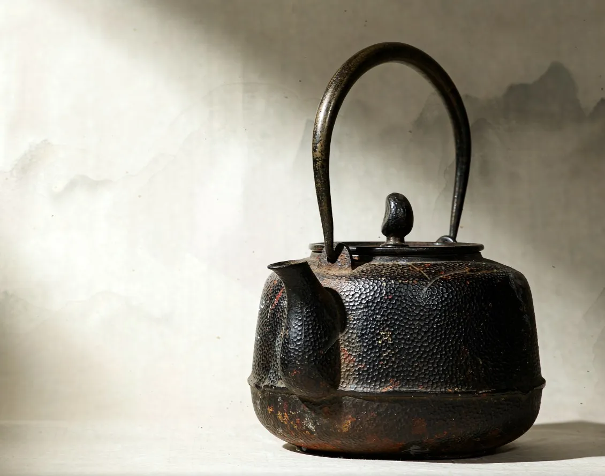

肆 · 04
Hammered Iron Kettle
锤纹铁壶
- Clay
- —
- Capacity
- —
- Year
- —
[待填] Full specifications — clay, capacity, year
A black iron body covered in fine hammer marks; the surface carries the traces of time.
[待填] Inquiry email — set it in src/data/site.json